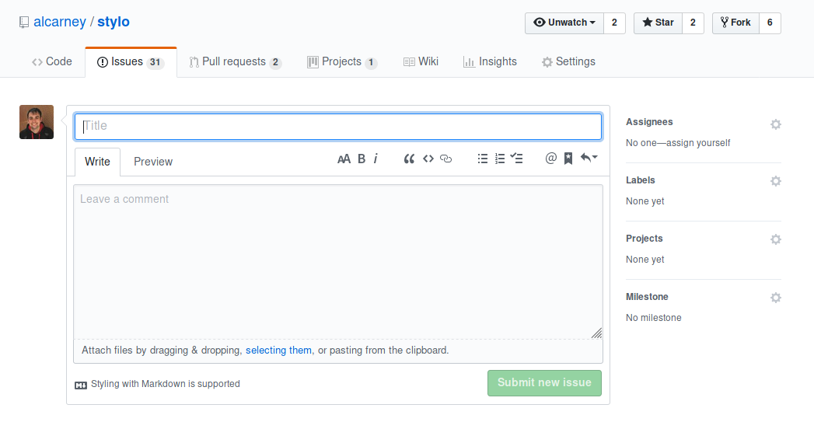

Open an Issue¶
You’ve found a bug, the documentation isn’t clear or there is something that you think we should know about and you need to raise an issue. This page will walk you through the process of opening an issue.
Opening an Issue¶
{kind=link}
- Go to the main repository on GitHub and click the green
New issuebutton on theIssuestab. Alternatively you can click this - Give your issue a descriptive title
- Explain your issue in detail, the more detail the better as it will help us figure out what is wrong. See What should I say?
- When you are happy with your report click the green
Submit new issueand wait until someone responds - Hopefully you won’t have to wait too long!
What should I say?¶
What you should include in your issue depends on what your issue is about. Below are a number of sections that aim to cover the most common kinds of issues and the information that would help us help you resolve the issue.
I found a bug¶
- What code were you running?
- What did you expect to see?
- What version of
styloare you using? - What version of
pythonare you using? - If there was an error message include that as well
There is a Problem with the Documentation¶
- Where on the documentation? Can you include a link?
- Try to be as specific as possible just saying “it doesn’t make sense” isn’t very helpful to us.
- Which parts do make sense?
- Is there a particular step that is unclear?
- If you were writing the documentation how would you phrase it?
- If you were using code from the documentation include that as well - it may be broken.